PDF 第 20 页 · 印刷页约 1
第一章 主题的构成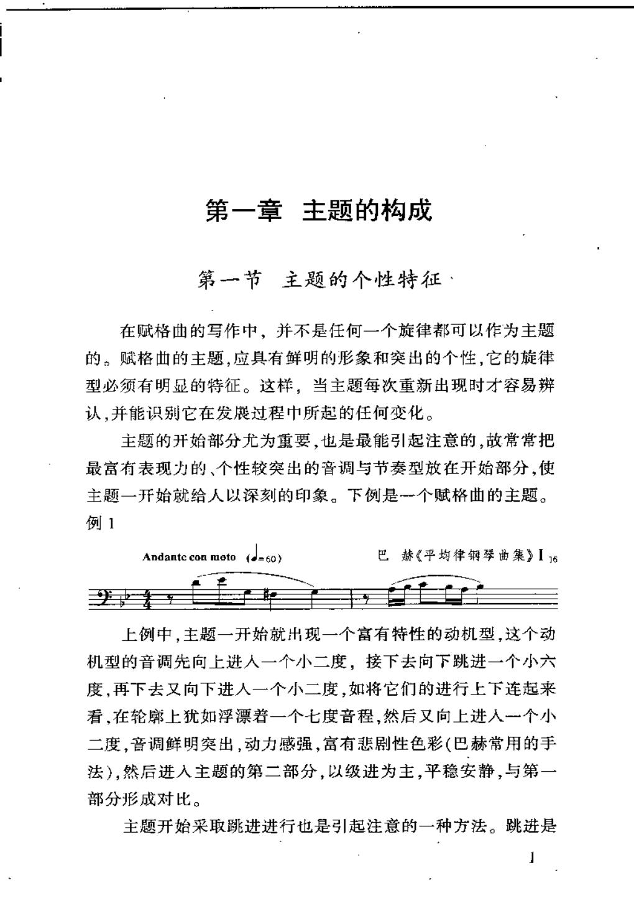
第一章主题的构成
第一节主题的个性特征·
在赋格曲的写作中，并不是任何一个旋律都可以作为主题
的。赋格曲的主题，应具有鲜明的形象和突出的个性，它的旋律
型必须有明显的特征。这样，当主题每次重新出现时才容易辨
认，并能识别它在发展过程中所起的任何变化。
主题的开始部分尤为重要，也是最能引起注意的，故常常把
最富有表现力的、个性较突出的音调与节奏型放在开始部分，使
主题一开始就给人以深刻的印象。下例是一个赋格曲的主题。
例1
巴赫《平均律钢琴曲集》I6
（=60)
Andantc con moto
上例中，主题一开始就出现一个富有特性的动机型，这个动
机型的音调先向上进人一个小二度，接下去向下跳进一个小六
度，再下去又向下进人一个小二度，如将它们的进行上下连起来
看，在轮廓上犹如浮漂若一个七度音程，然后又向上进人一个小
二度，音调鲜明突出，动力感强，富有悲剧性色彩（巴赫常用的手
法），然后进人主题的第二部分，以级进为主，平稳安静，与第一
部分形成对比。
主题开始采取跳进进行也是引起注意的一种方法。跳进是
PDF 第 38 页 · 印刷页约 19
第二章 答题的意义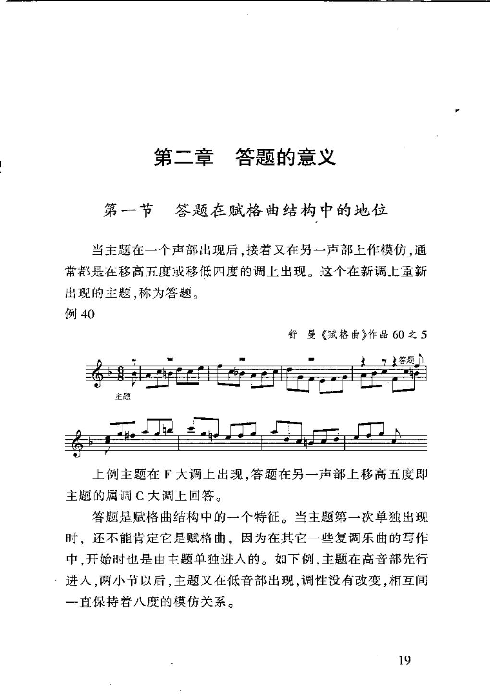
第二章答题的意义
第一节答题在赋格曲结构中的地位
当主题在一个声部出现后，接着又在另一声部上作模仿，通
常都是在移高五度或移低四度的调上出现。这个在新调上重新
出现的主题，称为答题。
例40
舒曼《赋格曲》作品60之5
答题
主题
上例主题在F大调上出现，答题在另一声部上移高五度即
主题的属调C大调上回答。
答题是赋格曲结构中的一个特征。当主题第一次单独出现
时，还不能肯定它是赋格曲，因为在其它一些复调乐曲的写作
中，开始时也是由主题单独进人的。如下例，主题在高音部先行
进人，两小节以后，主题义在低音部出现，调性没有改变，相互间
一直保持着八度的模仿关系。
19
PDF 第 53 页 · 印刷页约 34
第三章 对题的作用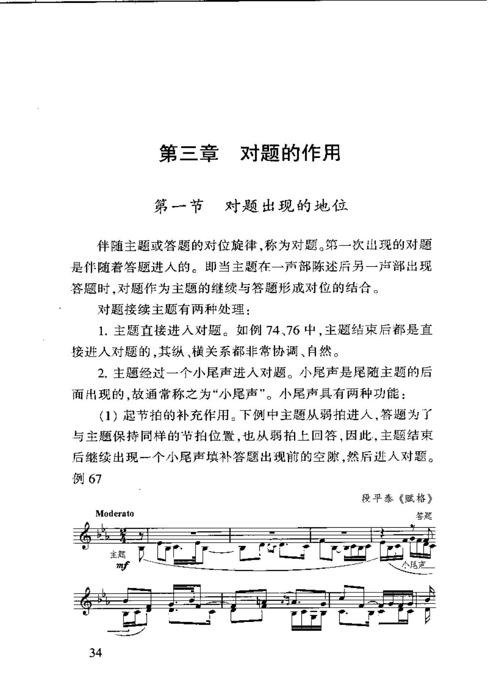
第三章对题的作用
第一节对题出现的地位
伴随主题或答题的对位旋律，称为对题。第一次出现的对题
是伴随着答题进人的。即当主题在一声部陈述后另一声部出现
答题时，对题作为主题的继续与答题形成对位的结合。
对题接续主题有两种处理：
1.主题直接进人对题。如例74、76中，主题结束后都是直
接进人对题的，其纵、横关系都非常协调、自然。
2.主题经过一个小尾声进人对题。小尾声是尾随主题的后
面出现的，故通常称之为“小尾声”。小尾声具有两种功能：
（1）起节拍的补充作用。下例中主题从弱拍进人，答题为了
与主题保持同样的节拍位置，也从弱拍上回答，因此，主题结束
后继续出现一个小尾声填补答题出现前的空隙，然后进人对题。
例67
段平泰《赋格》
Moderato
答蔻
主题
mf
34
PDF 第 68 页 · 印刷页约 49
第四章 呈示部的组合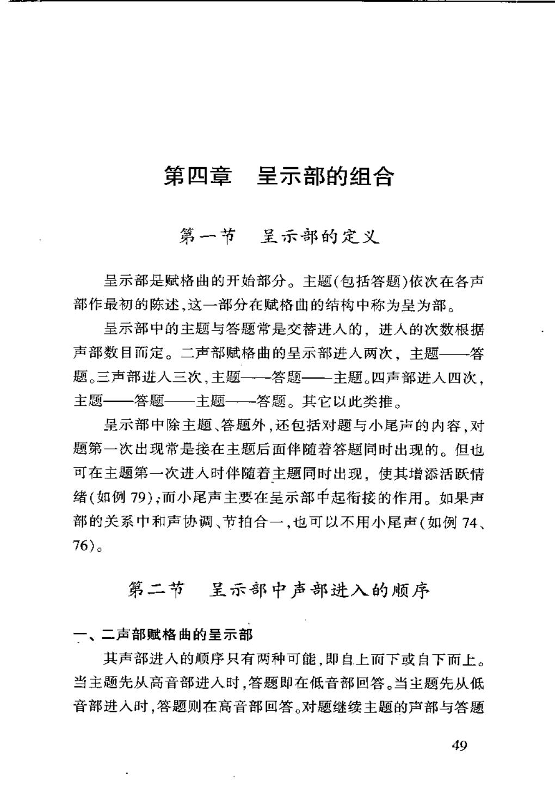
第四章呈示部的组合
第一节呈示部的定义
呈示部是赋格曲的开始部分。主题(包括答题)依次在各声
部作最初的陈述，这一部分在赋格曲的结构中称为呈为部。
呈示部中的主题与答题常是交替进人的，进人的次数根据
声部数目而定。二声部赋格曲的呈示部进人两次，主题—答
题。三声部进人三次，主题一一答题—主题。四声部进人四次，
主题—答题——主题——答题。其它以此类推。
呈示部中除主题、答题外，还包括对题与小尾声的内容，对
题第一次出现常是接在主题后面伴随若答题同时出现的。但也
可在主题第一次进人时伴随着主题同时出现，使其增添活跃情
绪（如例79)；而小尾声主要在呈示部中起衔接的作用。如果声
部的关系中和声协调、节拍合一，也可以不用小尾声（如例74、
76)。
第二节呈示部中声部进入的顺序
一、二声部赋格曲的呈示部
其声部进人的顺序只有两种可能，即自上而下或自下而上。
当主题先从高音部进人时，答题即在低音部回答。当主题先从低
音部进人时，答题则在高音部回答。对题继续主题的声部与答题
49
PDF 第 69 页 · 印刷页约 50
第四章 呈示部的组合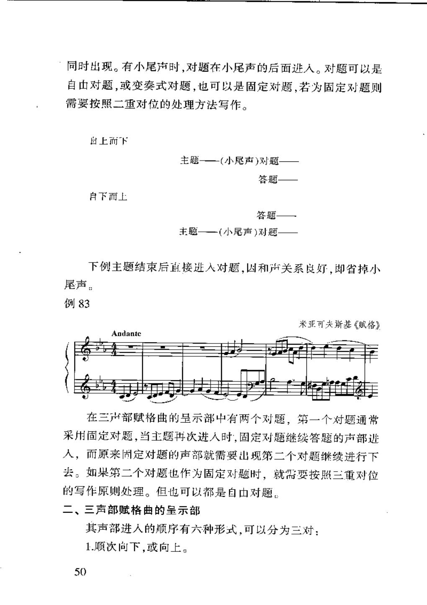
同时出现。有小尾声时，对题在小尾声的后面逃人。对题可以是
自由对题，或变奏式对题，也可以是固定对题，若为固定对题则
需要按照二重对位的处理方法写作。
白上而下
主题——(小尾声)对题-
答题
自下而上
答题
主题——(小尾声）对题-
下例主题结束后直接进人对题，因和声关系良好，即省掉小
尾声：
例83
米亚可夫斯基《赋格》
Andantc
在三声部赋格曲的呈示部中有两个对题，第一个对题通常
采用固定对题，当主题再次进人时，固定对题继续答题的声部进
人，而原来固定对题的声部就需要出现第二个对题继续进行下
去。如果第二个对题也作为固定对题时，就需要按照三重对位
的写作原则处理。但也可以都是自由对题。
二、三声部赋格曲的呈示部
其声部进人的顺序有六种形式，可以分为三对：
1.顺次向下，或向上。
50
PDF 第 96 页 · 印刷页约 77
第五章 间插段的功能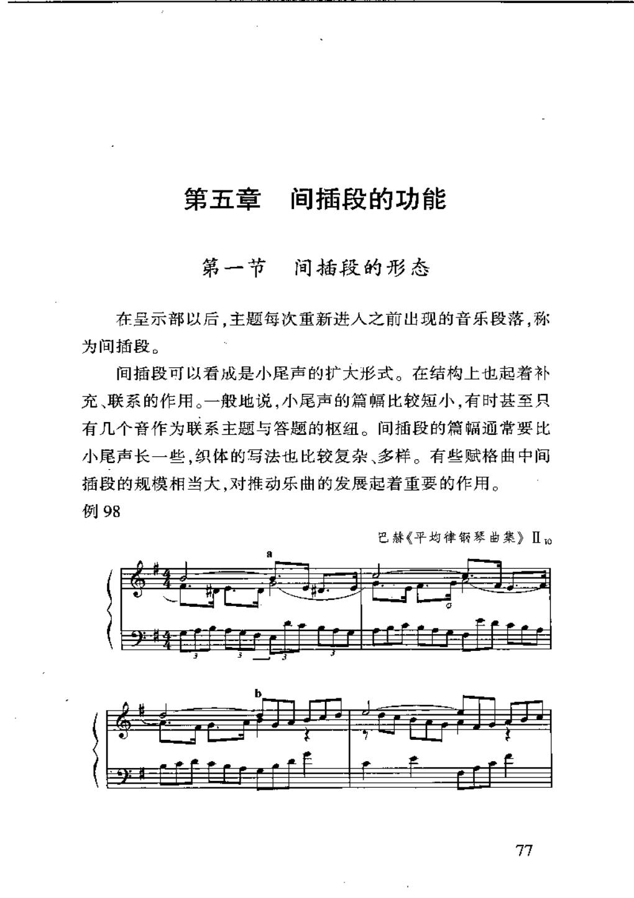
第五章
间插段的功能
第一节间插段的形态
在呈示部以后，主题每次重新进人之前出现的音乐段落，称
为间插段。
间插段可以看成是小尾声的扩大形式。在结构上也起着补
充、联系的作用。一般地说，小尾声的篇幅比较短小，有时甚至只
有几个音作为联系主题与答题的枢纽。间插段的篇幅通常要比
小尾声长一些，织体的写法也比较复杂、多样。有些赋格曲中间
插段的规模相当大，对推动乐曲的发展起着重要的作用。
例98
巴赫《平均律琴曲集》Ⅱto
77
PDF 第 98 页 · 印刷页约 79
第五章 间插段的功能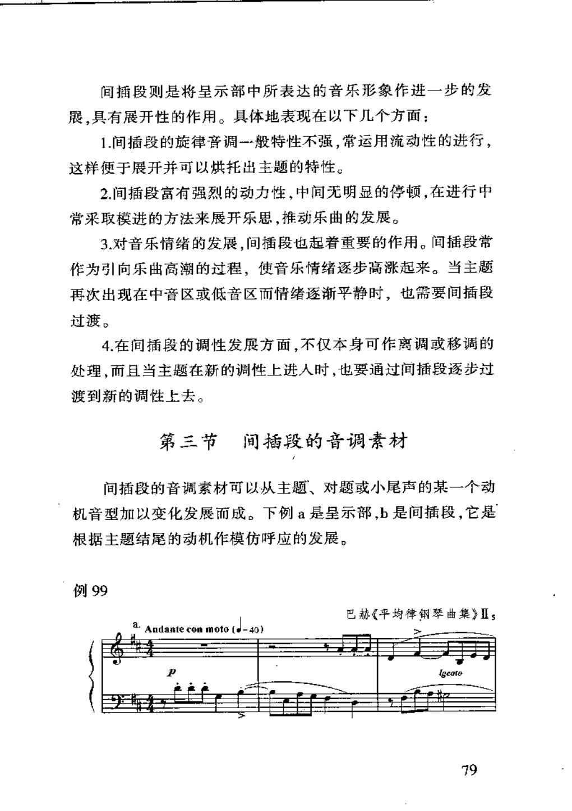
间插段则是将呈示部中所表达的音乐形象作进一步的发
展，具有展开性的作用。具体地表现在以下几个方面：
1.间插段的旋律音调一般特性不强，常运用流动性的进行，
这样便于展开并可以烘托出主题的特性。
2.间插段富有强烈的动力性，中间无明显的停顿，在进行中
常采取模进的方法来展开乐思，推动乐曲的发展。
3.对音乐情绪的发展，间插段也起着重要的作用。间插段常
作为引向乐出高潮的过程，使音乐情绪逐步高涨起来。当主题
再次出现在中音区或低音区而情绪逐渐平静时，也需要间插段
过渡。
4.在间插段的调性发展方面，不仅本身可作离调或移调的
处理，而且当主题在新的调性上进人时，也要通过间插段逐步过
渡到新的调性上去。
第三节间插段的音调素材
间插段的音调素材可以从主题、对题或小尾声的某一个动
机音型加以变化发展而成。下例a是呈示部，b是间插段，它是
根据主题结尾的动机作模仿呼应的发展。
例99
巴赫《平均律钢琴曲集》Is
Andanteconmoto（d=40)
igcato
79
PDF 第 136 页 · 印刷页约 117
第七章 紧接模仿的特性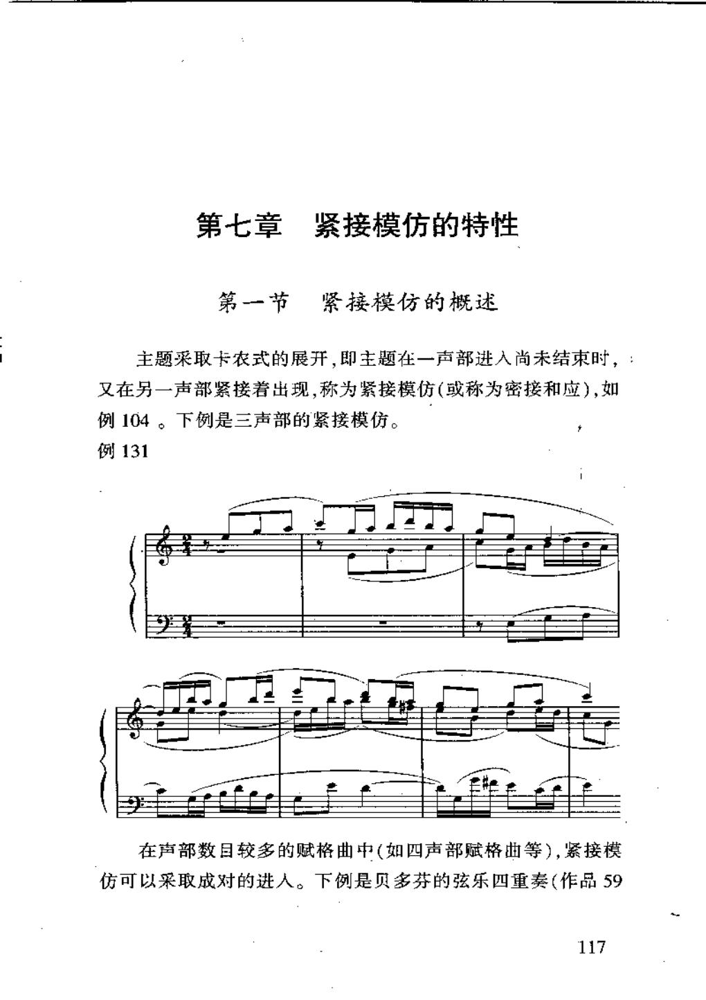
第七章紧接模仿的特性
第一节紧接模仿的概述
主题采取卡农式的展开，即主题在一声部进入尚未结束时，：
又在另一声部紧接着出现，称为紧接模仿(或称为密接和应)，如
例104。下例是三声部的紧接模仿。
例131
在声部数目较多的赋格曲中（如四声部赋格曲等），紧接模
仿可以采取成对的进人。下例是贝多芬的弦乐四重奏（作品59
117
PDF 第 138 页 · 印刷页约 119
第七章 紧接模仿的特性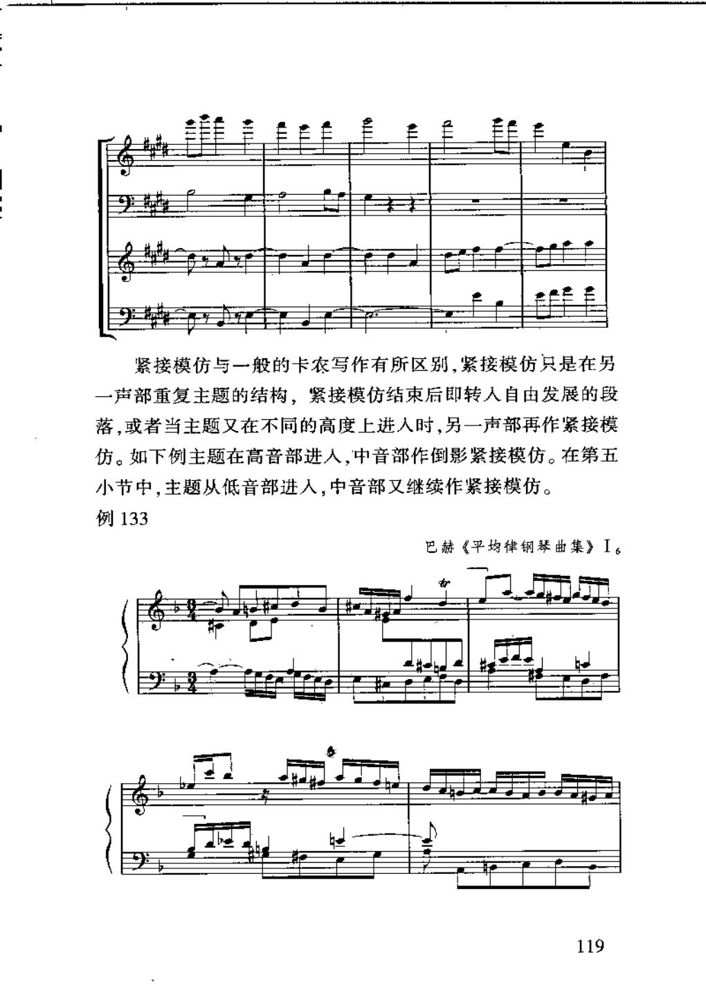
紧接模仿与一般的卡农写作有所区别，紧接模仿只是在另
一声部重复主题的结构，紧接模仿结束后即转人自由发展的段
落，或者当主题又在不同的高度上进人时，另一声部再作紧接模
仿。如下例主题在高音部进人，中音部作倒影紧接模仿。在第五
小节中，主题从低音部进人，中音部又继续作紧接模仿。
例133
巴赫《平均律钢琴曲集》I
119
PDF 第 154 页 · 印刷页约 135
第八章 再现部的回归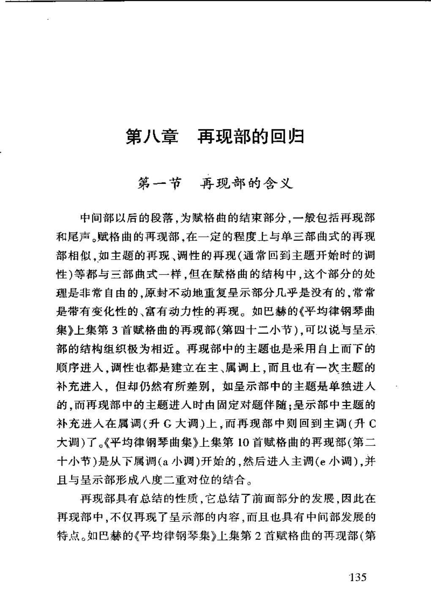
第八章再现部的回归
第一节再现部的含义
中间部以后的段落，为赋格曲的结束部分，一般包括再现部
和尾声。赋格曲的再现部，在一定的程度上与单三部曲式的再现
部相似，如主题的再现、调性的再现（通常回到主题开始时的调
性）等都与三部曲式一样，但在赋格曲的结构中，这个部分的处
理是非常自由的，原封不动地重复呈示部分几乎是没有的，常常
是带有变化性的、富有动力性的再现。如巴赫的《平均律钢琴曲
集》上集第3首赋格曲的再现部（第四十二小节），可以说与呈示
部的结构组织极为相近。再现部中的主题也是采用自上而下的
顺序进人，调性也都是建立在主、属调上，而且也有一次主题的
补充进入，但却仍然有所差别，如呈示部中的主题是单独进人
的，而再现部中的主题进人时由固定对题伴随；呈示部中主题的
补充进人在属调（升G大调）上，而再现部中则回到主调（升C
大调）了。《平均律钢琴曲集》上集第10首赋格曲的再现部（第二
十小节）是从下属调（a小调）开始的，然后进人主调（e小调），并
且与呈示部形成八度二重对位的结合。
再现部具有总结的性质，它总结了前面部分的发展，因此在
再现部中，不仅再现了呈示部的内容，而且也具有中间部发展的
特点。如巴赫的《平均律钢琴集》上集第2首赋格曲的再现部（第
135
PDF 第 165 页 · 印刷页约 146
第八章 再现部的回归：持续音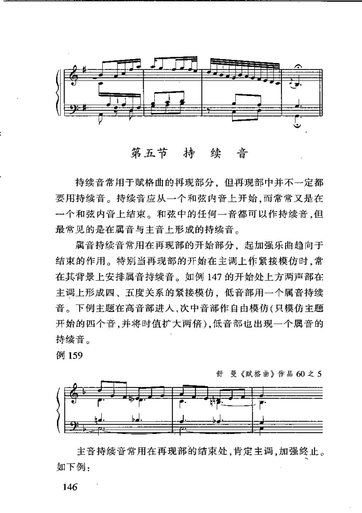
第五节持续 音
持续音常用于赋格曲的再现部分，但再现部中并不一定都
要用持续音。持续音应从一个和弦内音上开始，而常常又是在
-个和弦内音上结束。和弦中的任何一音都可以作持续音，但
最常见的是在属音与主音上形成的持续音。
属音持续音常用在再现部的开始部分，起加强乐曲趋向于
结束的作用。特别当再现部的开始在主调上作紧接模仿时，常
在其背景上安排属音持续音。如例147的开始处上方两声部在
主调上形成四、五度关系的紧接模仿，低音部用一个属音持续
音。下例主题在高音部进人，次中音部作自由模仿（只模仿主题
开始的四个音，并将时值扩大两倍），低音部也出现一个属音的
持续音。
例159
舒曼《赋格曲》作品60之5
主音持续音常用在再现部的结束处,肯定主调，加强终止。
如下例：
146
PDF 第 172 页 · 印刷页约 153
第九章 单一主题赋格曲的整体布局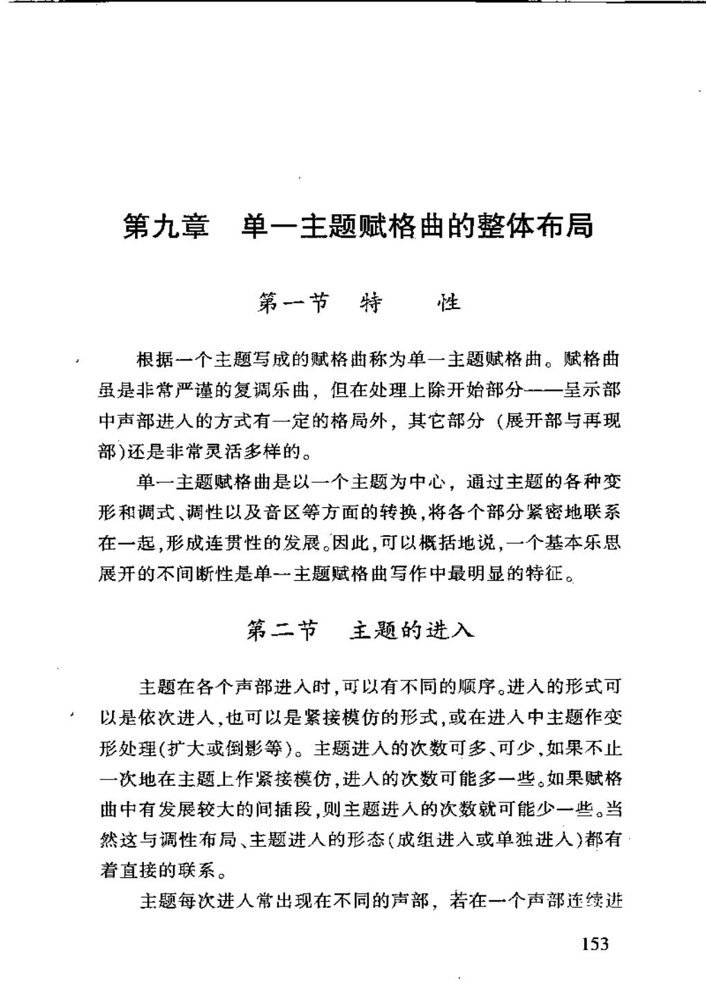
第九章单一主题赋格曲的整体布局
第一节特性
根据一个主题写成的赋格曲称为单一主题赋格曲。赋格曲
虽是非常严谨的复调乐曲，但在处理上除开始部分--一呈示部
中声部进人的方式有一定的格局外，其它部分（展开部与再现
部）还是非常灵活多样的。
单一主题赋格曲是以一个主题为中心，通过主题的各种变
形和调式、调性以及音区等方面的转换，将各个部分紧密地联系
在一起，形成连贯性的发展。因此，可以概括地说，一个基本乐思
展开的不间断性是单一主题赋格曲写作中最明显的特征。
第二节主题的进入
主题在各个声部进入时，可以有不同的顾序。进入的形式可
以是依次进人，也可以是紧接模仿的形式，或在进人中主题作变
形处理（扩大或倒影等）。主题进人的次数可多、可少，如果不止
一次地在主题上作紧接模仿，进人的次数可能多一些。如果赋格
曲中有发展较大的间插段，则主题进人的次数就可能少一些。当
然这与调性布局、主题进人的形态（成组进人或单独进人）都有
着直接的联系。
主题每次进人常出现在不同的声部，若在一个声部连续进
153
PDF 第 211 页 · 印刷页约 192
第十章 多主题赋格曲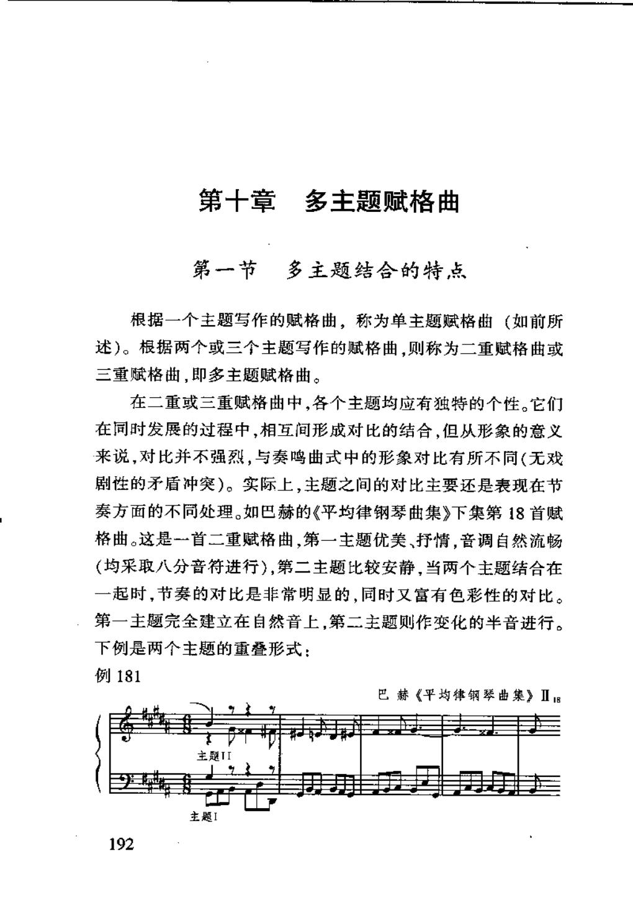
第十章多主题赋格曲
第一节多主题结合的特点
根据一个主题写作的赋格曲，称为单主题赋格曲（如前所
述）。根据两个或三个主题写作的赋格曲，则称为二重赋格曲或
三重赋格曲，即多主题赋格曲。
在二重或三重赋格曲中，各个主题均应有独特的个性。它们
在同时发展的过程中，相互间形成对比的结合，但从形象的意义
来说，对比并不强烈，与奏鸣曲式中的形象对比有所不同（无戏
剧性的矛盾冲突）。实际上，主题之间的对比主要还是表现在节
奏方面的不同处理。如巴赫的《平均律钢琴曲集》下集第18首赋
格曲。这是一首二重赋格曲，第一主题优美、抒情，音调自然流畅
（均采取八分音符进行），第二主题比较安静，当两个主题结合在
一起时，节奏的对比是非常明显的，同时又富有色彩性的对比。
第一主题完全建立在自然音上，第二主题则作变化的半音进行。
下例是两个主题的重叠形式：
例181
巴赫《平均律钢琴曲集》ⅡB
主题1
192
PDF 第 212 页 · 印刷页约 193
第十章 多主题赋格曲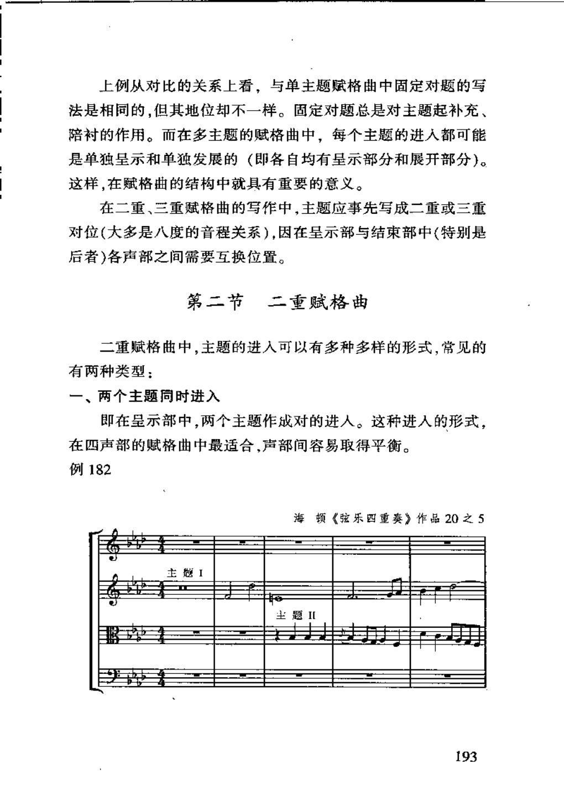
上例从对比的关系上看，与单主题赋格曲中固定对题的写
法是相同的，但其地位却不一样。固定对题总是对主题起补充、
陪衬的作用。而在多主题的赋格曲中，每个主题的进人都可能
是单独呈示和单独发展的（即各自均有呈示部分和展开部分）。
这样，在赋格曲的结构中就具有重要的意义。
在二重、三重赋格曲的写作中，主题应事先写成二重或三重
对位（大多是八度的音程关系），因在呈示部与结束部中（特别是
后者）各声部之间需要互换位置。
第二节二重赋格曲
二重赋格曲中，主题的进人可以有多种多样的形式，常见的
有两种类型：
一、两个主题同时进入
即在呈示部中，两个主题作成对的进人。这种进人的形式，
在四声部的赋格曲中最适合，声部间容易取得平衡。
例182
海顿《弦乐四重奏》作品20之5
主题I
主题ⅡI
193